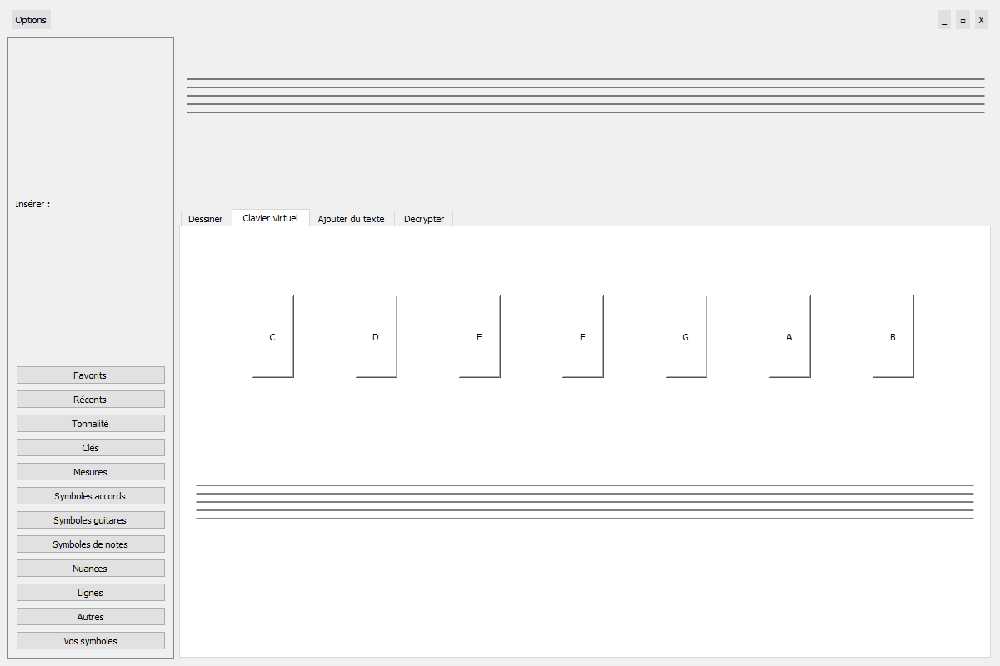
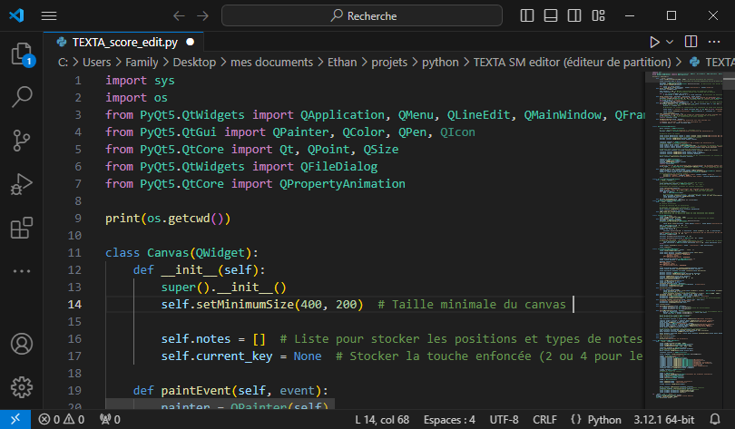
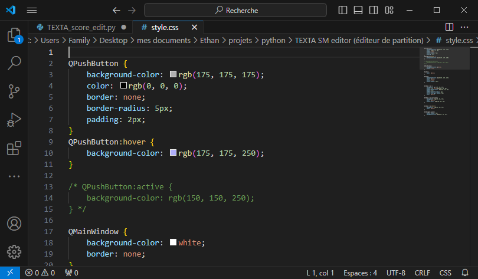

TEXTA score edit
Qu'est-ce que c'est ?
TEXTA score edit est un logiciel libre et open source qui permettra de produire des partitions musicales avec plein d'outils. Il vous permettra de créer et modifier des contenus en fichier .xml, et permet d'éditer avec une interface MIDI, ou en manuscrit sur tablette (Surface, iPad ...). Il est disponible pour Windows, macOS, Linux et aussi sur Google Play Store et sur l'App Store d'iOS.
Quel langage de programmation utiliser pour ce projet ?
TEXTA score edit est développé avec Python pour Windows seulement. Il utilise des bibliothèques de GUI comme PyQt5 et Tkinter. Il utilise MIDO pour la gestion MIDI, Pygame pour jouer les sons de différents instruments et pour jouer la partition.
Fichier GUI du logiciel Python
Objectif :
TEXTA score edit a pour objectif d'éditer plus rapidement, d'être open-source avec une communauté de développeurs et de musiciens sur le forum officiel du logiciel. Il respectera votre vie privée car aucune donnée ne sera envoyée à TEXTA, mais vous pouvez envoyer des commentaires pour nous donner des avis, signaler des problèmes, des erreurs et faire des suggestions.
Les fonctionnalités
Decrypter

Decrypter est une des fonctionnalités principales qui propose des outils très intéressants comme la conversion de l'audio (.mp3, .wav ...) en partition sur votre projet que vous avez créé ou inversement. Decrypter sera maintenant une IA qui permettra de corriger les partitions et de recréer des idées qui peuvent bien s'intégrer dans votre partition.
Les plug-ins
TEXTA score edit étant open-source, il permet d'avoir des plug-ins pour personnaliser au maximum le logiciel selon vos goûts. Les plug-ins préinstallés sont : Guitar tab for TX score edit (éditeur de tablatures pour guitare, basse, ukulélé ... par TEXTA), TX harmo tab (éditeur de tablatures et des outils pour les harmonicistes qui utilisent TEXTA score edit, fait par TEXTA) ...
Dans le menu Plug-in, vous trouverez tous les plug-ins installés ainsi que le gestionnaire dans lequel vous pouvez modifier, ajouter dans le store et aussi supprimer vos plug-ins. Vous pouvez aussi créer vos propres plug-ins via Visual Basic plug for TX.
Un logiciel personnalisable
TEXTA peut avoir une interface qui vous convient parfaitement. Il suffit d'aller dans les paramètres d'affichage et vous pouvez modifier les thèmes préinstallés. Si vous avez des connaissances, vous pouvez créer votre propre fichier CSS à l'aide des éléments configurés et mis à votre disposition. TEXTA learn peut vous en dire davantage sur la modification du code CSS. Vous pouvez changer la disposition des boutons, onglets, des menus et de la barre d'outils pour personnaliser au maximum. 
Autres fonctionnalités
- Clavier virtuel pour tablettes
- Outil de collaboration en direct
- IA puissante pour enrichir vos partitions, aidez-la aussi !
- Fonction enseignement
- Vous pouvez mettre en page, imprimer ou exporter en PDF, image ou fichier XML ...
- Possibilité d'exporter vos partitions en PDF, images, XML, et d'importer des fichiers audio et XML
Ca vous plait !
Télecharger TEXTA score edit maintenant !